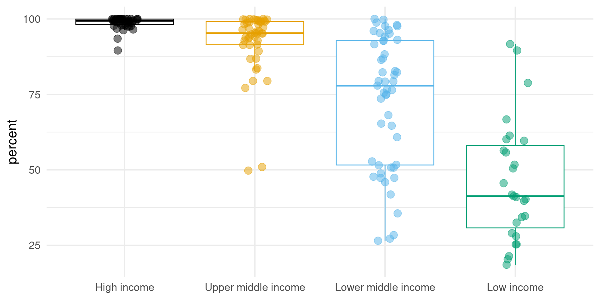

For this analysis we will use the jmpwashdata R Package by Dickinson (2021). The package contains all data compiled by the WHO/UNICEF Joint Monitoring Programme (JMP).
We will also use the World Bank income classification for 218 countries. This data was downloaded and stored as an XLSX file using an R script in src.
Data for the most recent year, basic sanitation in urban areas, calculate urban population, and join income groups.
# Perform data manipulation operations on the jmp_wld_sanitation data frame
jmp_wld_sanitation_gdp_income <- jmp_wld_sanitation |>
# Filter the rows where the year column is equal to the maximum year value
filter(year == max(year)) |>
# Select the columns from name to prop_u and the san_bas_u column
select(name:prop_u, san_bas_u) |>
# Create a new column named pop_u
mutate(pop_u = pop_n * 1000 * prop_u / 100) |>
# Drop the pop_n and prop_u columns
select(-pop_n, -prop_u) |>
# Perform a left join with the income_groups_df data frame
left_join(income_groups_df) |>
# Drop the rows that have missing values in the san_bas_u & income_group cols
drop_na(san_bas_u, income_group)# Create a vector of color codes
color_scale_sanitation <- c("#8cce8f", "#fff381", "#ffda5a", "#ffbc02")
# Create a vector of sanitation indicators
fct_sanitation <- c("basic", "limited", "unimproved", "open defecation")
# Perform data manipulation operations on the jmp_wld_sanitation data frame
jmp_uga_sanitation <- jmp_wld_sanitation |>
# Filter the rows where the iso3 column is equal to "UGA" and the year column
# is equal to 2000 or 2020
filter(iso3 == "UGA") |>
filter(year == 2000 | year == 2020) |>
# Select the name, iso3, year, and columns from san_bas_n to san_od_n
select(name, iso3, year, san_bas_n:san_od_n) |>
# Reshape the data frame from wide to long format
pivot_longer(cols = san_bas_n:san_od_n,
names_to = "indicator",
values_to = "percent") |>
# Rename the indicator column based on the values of the san_bas_n to san_od_n
# columns
mutate(indicator = case_when(
indicator == "san_bas_n" ~ "basic",
indicator == "san_lim_n" ~ "limited",
indicator == "san_unimp_n" ~ "unimproved",
indicator == "san_od_n" ~ "open defecation"
)) |>
# Convert the indicator column to a factor with levels specified by the
# fct_sanitation vector
mutate(indicator = factor(indicator, level = fct_sanitation))This is a foto of a toilet.
Figure 1 is a box- and jitterplot of countries with percentages of populations with access to basic sanitation in 2020 grouped by income classifications.
ggplot(data = jmp_wld_sanitation_gdp_income,
mapping = aes(x = income_group,
y = san_bas_u,
color = income_group)) +
geom_boxplot(outlier.shape = NA) +
geom_jitter(width = 0.1, size = 4, alpha = 0.5) +
labs(x = NULL, y = "percent") +
scale_color_colorblind() +
theme_minimal(base_size = 16) +
theme(legend.position = "none")
Table 1 shows urban sanitation indicators for global regions in 2020.
jmp_reg_sanitation |>
filter(year == max(year)) |>
filter(!str_detect(region, "income")) |>
select(region, san_bas_u:san_od_u) |>
drop_na() |>
gt(rowname_col = "region") |>
cols_label(
san_bas_u = md("**basic**"),
san_lim_u = md("**limited**"),
san_unimp_u = md("**unimproved**"),
san_od_u = md("**open defecation**")
) |>
fmt_percent(columns = san_bas_u:san_od_u,
decimals = 0,
scale_values = FALSE) | basic | limited | unimproved | open defecation | |
|---|---|---|---|---|
| Central and Southern Asia | 79% | 17% | 3% | 1% |
| Eastern and South-Eastern Asia | 95% | 3% | 2% | 1% |
| Europe and Northern America | 99% | 1% | 1% | 0% |
| Latin America and the Caribbean | 93% | 4% | 3% | 0% |
| Northern Africa and Western Asia | 95% | 2% | 2% | 0% |
| Oceania | 71% | 9% | 17% | 3% |
| Sub-Saharan Africa | 46% | 32% | 17% | 5% |
| Fragile or Extremely Fragile | 62% | 22% | 13% | 3% |
| Least Developed Countries | 48% | 29% | 20% | 4% |
| Landlocked Developing Countries | 62% | 22% | 14% | 2% |
| Small Island Developing States | 83% | 10% | 5% | 2% |
| World | 88% | 8% | 3% | 1% |
Figure 2 shows the sanitation ladder for Uganda.
ggplot(data = jmp_uga_sanitation,
mapping = aes(x = year,
y = percent,
fill = indicator)) +
geom_area() +
labs(title = "Uganda: sanitation ladder (national)",
x = NULL, y = "percent", fill = "indicators") +
scale_fill_manual(values = color_scale_sanitation) +
scale_x_continuous(breaks = c(2000, 2020)) +
theme_minimal(base_size = 16) +
theme(panel.grid.minor = element_blank()) Figure 2: Sanitation indicators for Uganda on a national level.
Kalina and Tilley (2020) did.